Первый танкер с 40 тысячами тонн российского дизеля отправился в Нью-Йорк в рамках дизельной сделки России и США — Reuters. @bankrollo https://t.me/bankrollo/68812 Следующие отправки дизеля в США будут ритмично продолжаться — Песков. @bankrollo
Первый танкер с 40 тысячами тонн российского дизеля отправился в Нью-Йорк в рамках дизельной сделки России и США — Reuters. @bankrollo https://t.me/bankrollo/68812 Следующие отправки дизеля в США будут ритмично продолжаться — Песков. @bankrollo
Россиянина, подозреваемого в отмывании денег наркокартелей и обходе санкций через крипту, задержали в США. Преступная сеть Павла Кулижникова обменивала наличные на крипту через Telegram и могла проводить до $50 млн в сутки, забирая себе до 8% комиссии. @bankrollo
Один цифровой проект ещё не делает трансформацию постоянной. Если в компании не выстроен процесс поиска точек роста, проверки идей и запуска решений, через несколько месяцев многое приходится начинать заново. На программе «Цифровая трансформация бизнеса» участники учатся выстраивать этот процесс и параллельно работают над задачей своего бизнеса — от поиска идеи до запуска продукта. Программа рассчитана на команды цифровой трансформации, проектные офисы, центры компетенций, CDO и руководителей функций. В компанию участник возвращается не только с проработанным решением, но и с инструментами для запуска следующих изменений.
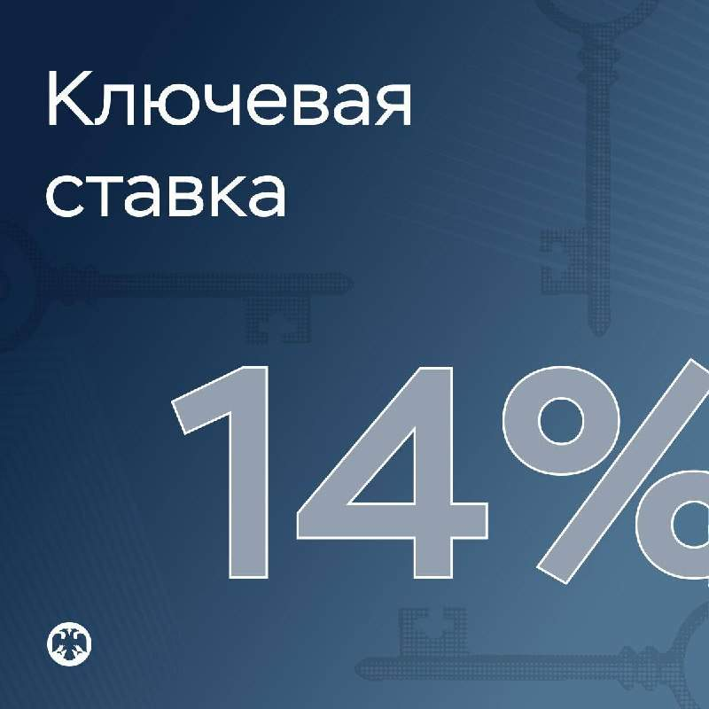
ЦБ России снова сохранил ключевую ставку на уровне 14%. @bankrollo
Базовый сценарий предполагает среднюю ключевую ставку в диапазоне 12,5–13,5% в 2027 году — ЦБ. Ранее ЦБ прогнозировал ставку на уровне 10,5–12,5%. @bankrollo
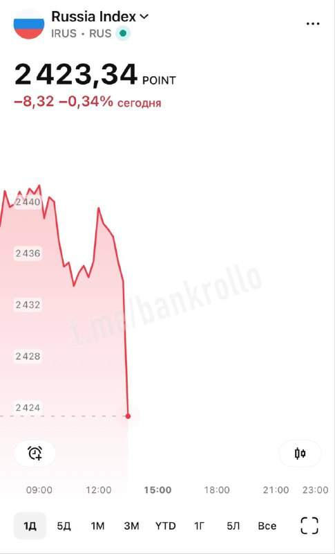
Индекс Мосбиржи полетел вниз после оглашения ключевой ставки. @bankrollo
Российские хакеры взломали айфон зятя Трампа Кушнера ещё 10 лет назад, пишет Vanity Fair. По данным издания, в конце 2017 года нидерландская военная разведка перевербовала российского хакера, работавшего на ГРУ. Он якобы предоставил ей доступ к серверу, где хранились похищенные российской разведкой скриншоты iPhone Кушнера. В итоге нидерландские специалисты обнаружили, что зять Трампа получил от властей ОАЭ и Саудовской Аравии не менее $2 млрд на секретные банковские счета. Сам Кушнер назвал обвинения «совершенно безумными» и отметил, что «такого никогда не было». @bankrollo
Все четыре аэропорта Москвы остановили обслуживание рейсов — Росавиация. @bankrollo
Греф назвал уход с госслужбы самым счастливым днём в жизни. «До сих пор самый великий момент в моей жизни — когда президент меня отпустил, и я испытываю огромное чувство благодарности за это», — отметил глава Сбербанка. @bankrollo
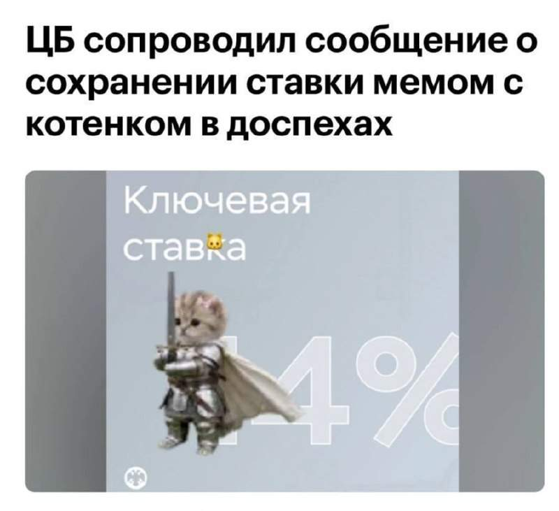
Ключевую ставку в России теперь охраняет котик в доспехах. @bankrollo
В Шереметьеве объявили воздушную тревогу.«Пассажирам необходимо проследовать в ближайшие безопасные зоны и места укрытия», — сообщили в аэропорту. @bankrollo
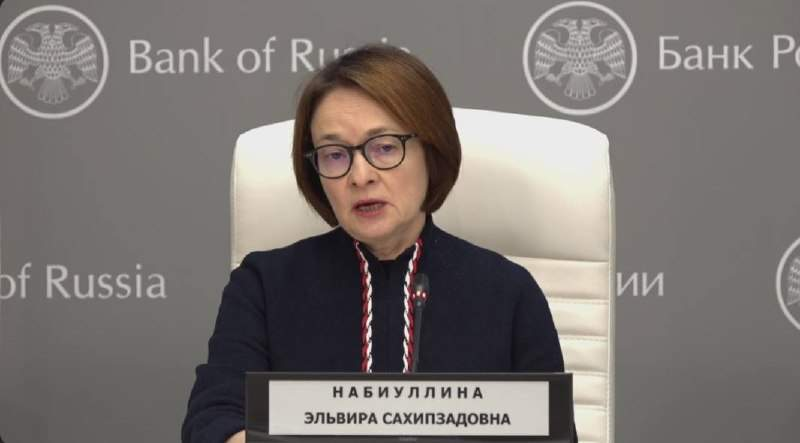
Существенное влияние на инфляцию оказывало выбытие мощностей — Набиуллина. @bankrollo
ЦБ потребуется более длительный период жёсткой денежно-кредитной политики для достижения инфляции 4% — Набиуллина. @bankrollo
Мы постепенно должны перейти к сбалансированным темпам роста после перегрева и жёсткой ДКП — Набиуллина. @bankrollo
Оснований для массового ухудшения платёжеспособности российских компаний в 2027 году нет — Набиуллина. @bankrollo
Власти обсуждают завершение программы ипотеки для айтишников в этом году, пишет РБК. В Минцифры говорят о проработке вопроса финансирования «в условиях ограниченности бюджетных средств». @bankrollo https://t.me/bankrollo/68819 Льготная ипотека должна быть ограничена — Набиуллина о возможной отмене IT-ипотеки. «Если мы хотим, чтобы ипотека была доступной, то её объёмы не должны расти». @bankrollo
Объёмы выпуска дизеля в России достаточны для покрытия внутреннего и внешнего спроса — Набиуллина. @bankrollo
Доля прибыльных компаний сейчас чуть-чуть меньше, чем была в 2018-2019 годах — Набиуллина. @bankrollo
Семейная ипотека становится ещё более адресной, это приведёт к тому, что цены на жильё не будут так опережать темпы инфляции — Набиуллина. @bankrollo
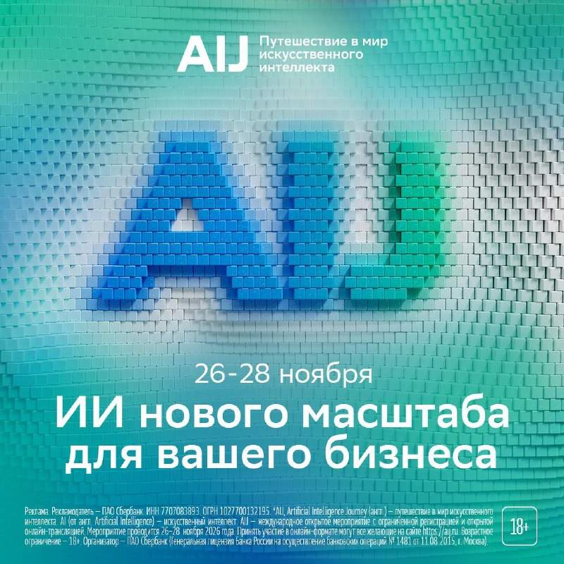
В Москве состоится международная конференция по искусственному интеллекту AI Journey. 27 ноября эксперты расскажут, как сделать нейросети надёжным помощником для бизнеса. Также в программе: — практические кейсы компаний, внедряющих ИИ; — выступления российских и международных экспертов; — выставка новых ИИ-продуктов и исследовательских разработок; — нетворкинг с лидерами индустрии. Конференция AI Journey пройдёт с 26 по 28 ноября и позволит взглянуть на бизнес под новым углом, а также найти точки роста. Для участия необходима регистрация по ссылке . А 26 ноября на сайте aij.ru будет доступна прямая трансляция дня «Общество».
В России начнут изымать лошадей у цыган и отправлять на штрафстоянку. В Брянске заработал пункт временного содержания лошадей. Городские власти устали от регулярных жалоб жителей Володарского и Фокинского районов на табуны коней, которые бродят без присмотра, жуют декоративные насаждения и переворачивают мусорные контейнеры. Теперь лошадей будут ловить и «эвакуировать» на штрафстоянку. Сутки пребывания коня под арестом обойдутся владельцу в 1200 рублей. @bankrollo
Всё больше этапов покупки и продажи автомобиля переходит в онлайн, но между ними сохраняются разрывы: онлайн-расчёты пока не стали привычными в сделках между частными лицами. Эксперты рынка обсудили это на пленарной сессии автофорума Сбера. Управляющий партнёр Авито Сергей Пивень рассказал, что платформа пока не планирует создавать собственный банк, но обсуждает углубление сотрудничества с крупнейшими банками ради единого клиентского пути — от выбора автомобиля до покупки, продажи и финансирования. «Важно, что крупнейший банк страны разделяет наш подход. Мы видим большой потенциал в совместном развитии онлайн-финансирования и безопасных расчётов», — отметил Пивень. @bankrollo
Украина ударила ракетами по Орлу, пострадало одно из предприятий города — губернатор Клычков. @bankrollo
Главный символ успеха у зумеров-мужчин — игровой ПК. Так считают 28% россиян. У девушек — горнолыжная одежда. На втором месте у мужчин — машина, а у девушек — дизайнерская сумка. Собственную квартиру выбрали только 9% опрошенных. @bankrollo
Прекращения огня между Россией и Украиной в районе Алешки добилась Мелания Трамп — Белый дом. На этой новости Мосбиржа прыгнула вверх. @bankrollo https://t.me/bankrollo/68844 «Режим тишины» вводится с 4:00 мск 27 октября на херсонском направлении в связи с гуманитарной операцией в Алешках — Герасимов. @bankrollo
Криштиану Роналду заработал $2 млрд и стал первым в истории спортсменом, заработавшим такую сумму за карьеру — Forbes. @bankeollo
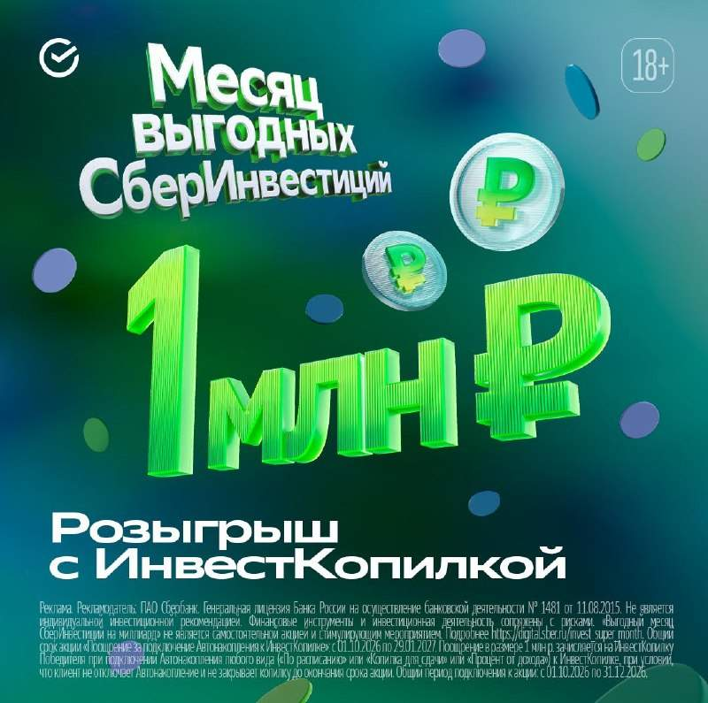
Копить на большие цели можно без лишних усилий каждый месяц, начиная всего со 100 рублей. ИнвестКопилка в СберБанк Онлайн автоматически вкладывает деньги в биржевые фонды, а подключённые к ней Автонакопления сами копят деньги на ИнвестКопилку: округляют покупки по карте и переводят разницу на счёт, отправляют туда процент от доходов или регулярно списывают фиксированную сумму в выбранные даты. Достаточно один раз всё настроить, и больше не придётся вспоминать, что пора отложить деньги. А среди тех, кто откроет ИнвестКопилку и подключит любое Автонакопление, разыграют 1 млн рублей. Открыть ИнвестКопилку и подключить к ней Автонакопление можно в СберБанк Онлайн.
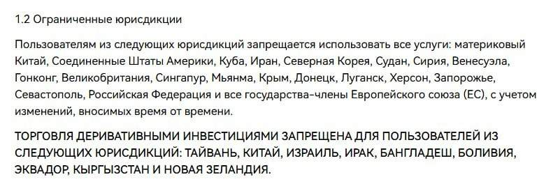
Криптобиржа HTX уходит из России — страну внесли в список запрещённых юрисдикций. Это уже третья крупная биржа за месяц, которая перестала работать с россиянами. @bankrollo
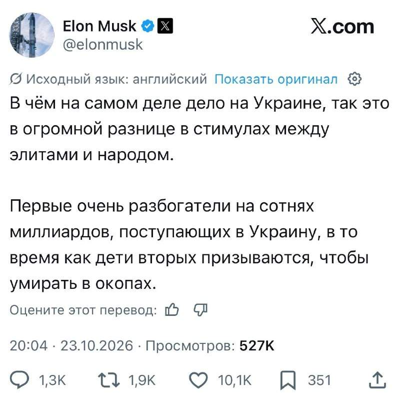
Элиты богатеют, пока дети простых людей умирают в окопах — Илон Маск про Украину. @bankrollo
Более 3,4 млн российских пенсионеров одновременно используют и вклад, и накопительный счёт в Сбере — это почти вдвое чаще остальных клиентов. Так люди старшего возраста распределяют бюджет: на депозитах под процент лежат деньги на долгосрочные планы, а на счетах держат запас на коммуналку и лекарства. В августе клиенты старше 65 лет пополняли такие счета в среднем на 15 тысяч рублей, что на четверть выше, чем у молодёжи. Специально для пожилых клиентов банк в качестве бонуса предоставляет бесплатное обследование в СберЗдоровье за перевод пенсии и вклад «Пенсионный Максимум». @bankrollo
Девушку укололи шприцем в московском метро. 18-летняя девушка вечером зашла в вагон на станции «Новаторская» и почувствовала укол в области правой ягодицы. Неизвестный со шприцем скрылся, его ищет полиция. @bankrollo
Писательница из Южной Африки сгенерировала 370 книг за 20 месяцев и заработала $1 млн за год. Она сама придумывает сюжеты и персонажей, а остальное за неё пишут ChatGPT, Claude и Grok. @bankrollo
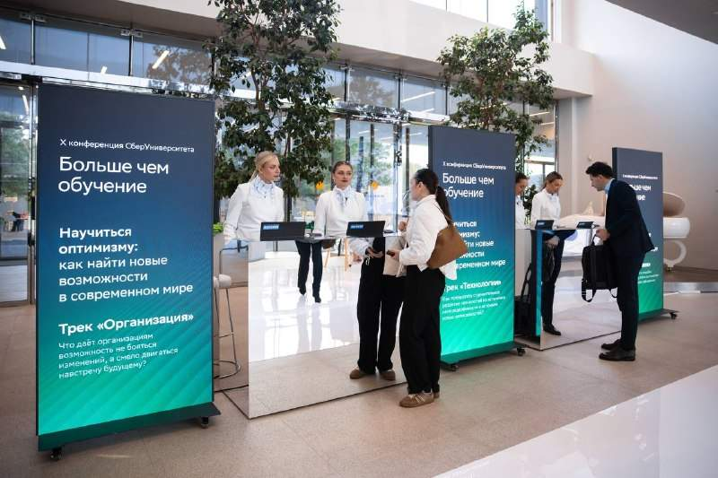
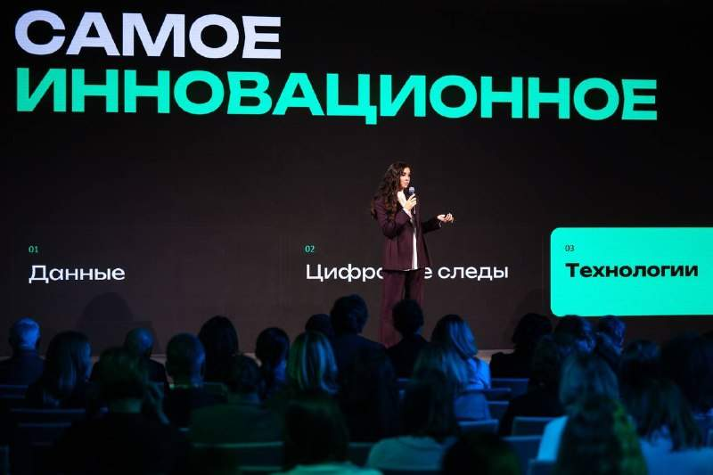
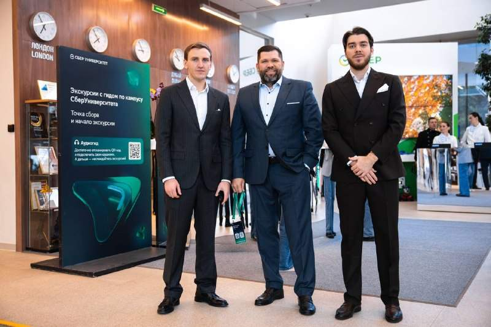
К 2031 году ИИ сможет самостоятельно выполнять основную работу в 30% задач начинающих специалистов, а роль человека будет смещаться к контролю его результатов. Такой прогноз дал проректор по исследованиям и инновациям СберУниверситета Алексей Суханов, представив исследование «Образование будущего. Горизонт 2031» на X конференции «Больше, чем обучение». В основе исследования — форсайт с цифровыми двойниками 17 футурологов и 21 учёного, созданными по их работам, лекциям и интервью. Гендиректор СберУниверситета Наталья Осипчук рассказала о гиперперсонализации образования и ИИ-инструментах для индивидуальных траекторий обучения. Будущее образования — не только в развитии технологий, но и в раскрытии человеческого потенциала, считают в вузе. @bankrollo
Аэропорты Москвы закрыли третий раз за день. В Домодедове, Внукове и Жуковском введены ограничения — Росавиация. @bankrollo
У здорового человека — тысяча желаний. У больного — только одно (выздороветь)! — президент ДОНАЛЬД. ДЖ. ТРАМП. @bankrollo
Сомали — это настоящий сортир, ясно? Это вообще не страна — Трамп разжаловал Сомали. @bankrollo https://t.me/bankrollo/68639 Трамп признал Сомали страной, но с нюансом: «Сомали — худшая страна в мире. Единственное, что там работает без перебоев, — стрельба». @bankrollo